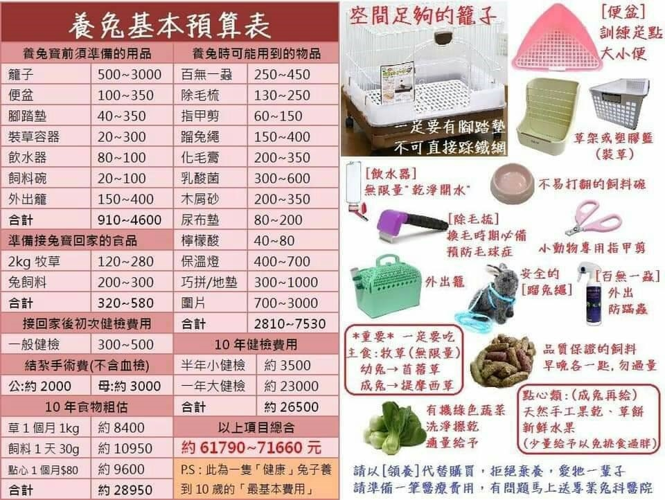

(1) 大小需可讓兔子自由運動、改變姿勢（如用後腳站立），並且可以輕易取得食物與飲水。
(2) 通風良好。
(3) 擺放位置需避免狗、貓或其他食肉動物的騷擾。
(4) 沒有尖銳的邊緣以免割傷。
(5) 材質堅硬（例如不銹鋼），易於清理且避免被咬壞，避免用木製籠。
(6) 底部若為鐵網構造易使兔子的腳承受過多的壓力，可加上塑膠做成的軟墊放在底部，並時常清洗。
如陶製品，可防止打翻。
要保持水瓶的乾淨，並每天換新鮮的水。
材質需防水且不易破裂或咬壞，例如堅固的塑膠盆，可加入貓砂或墊料，每日清理一次
（注意有的兔子可能會吃貓砂，此類兔子就要避免使用貓砂）。